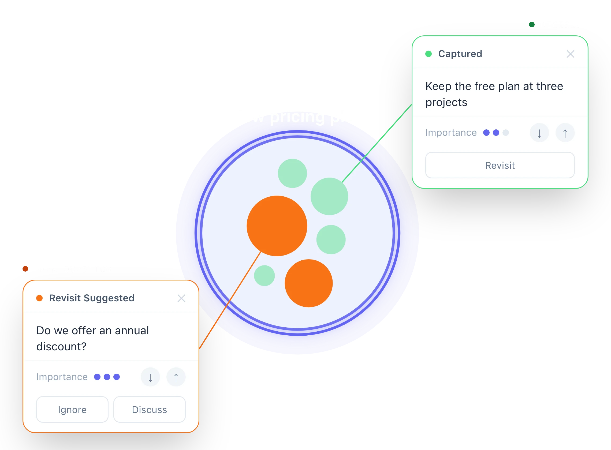

Leave with clarity
- Know where things stand: Keep track of decisions, action items, and questions that still need discussion.
- Understand what’s next: Leave with a shared understanding of decisions made, action items and responsibilities, and questions that still need to be addressed.
